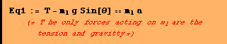

Question #4
Find the acceleration and tension in given the following system given = 7kg? a) The system with negligable friction and b) with a μ = 0.15. θ = 35°

For part b I need only modify the first equation…
![[Graphics:../Images/index_gr_37.gif]](../Images/index_gr_37.gif)
![[Graphics:../Images/index_gr_39.gif]](../Images/index_gr_39.gif)
![[Graphics:../Images/index_gr_40.gif]](../Images/index_gr_40.gif)
![[Graphics:../Images/index_gr_46.gif]](../Images/index_gr_46.gif)